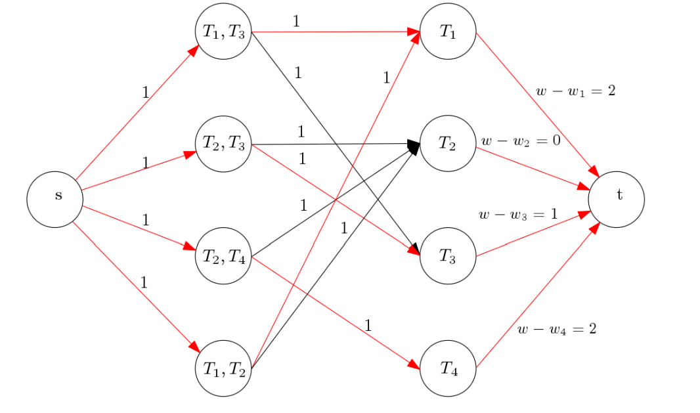

In order to sufficiently prepare for my CPSC 420 final, I've decided to write a detailed review of the material covered in this course. Hopefully by attempting to explain the material, I'll cement my understanding of it. And who knows... at some point someone might decide to put up with my incohesive writing and read this entire post (and hopefully they'll learn something from it).
Roughly 12 topics were covered in this iteration of the course (2015W2, Professor: Will Evans). I say roughly, because it's not quite clear where one topic ends and another begins since each topic leads into the next one fairly well.
Nonetheless, the following 12 topics are how I'll split up this post:
- Geometry (Convex Hulls, Graham's Scan, Jarvis' March, Chan's Algorithm)
- Linear Programming (Network Flow, Duality, Zero-Sum Games)
- Dynamic Programming (Bellman-Ford, Floyd-Warshall, Johnson's reweighting algorithm, Landmarks for Shortest Path Queries)
- NP, NP-Complete, NP-Hard (k-Clique, Vertex Cover)
- NP Approximation Algorithms (Approx Vertex Cover, Approx Graham's Scheduling, Christofides Algorithm)
- Hardness of Approximation (Proof that TSP cannot be approximated)
- Competitive Analysis of Online Algorithms
- Universal Hash Function
- Cuckoo Hashing
- Fast Fourier Transform
- Quantum Computing (Quantum Factoring with FFT)
- Zero-Knowledge Proofs
A lot more time was spent on certain topics than others, so it should be expected that certain topics will be reviewed in greater detail than others.
Without further ado, let's start reviewing!
Geometry
We begun the course by introducing the notion of convex combinations. For the sake of example, say you have two jars: jar A and jar B. Jar A contains a solution that is 15% oil and 36% vinegar, while jar B contains a solution that is 9% oil and 21% vinegar. However, for our purposes we require a solution that is 13% oil and 31% vinegar.
The question is whether we would be able to combine varying quantities of the solutions in jar A and B to obtain our desired mixture. To answer this question algebraically, we could solve the following system of equations.

If both a and b are between 0 and 1 and a+b is 1, then we know that we can combine the two solutions to obtain our desired solution (of the same volume). In this case, a would signify the amount of solution A we want to add to our mixture and b would signify the amount of solution B we want to add to our mixture.
If there is a way to combine two mixtures, we can say that desired mixture is a convex combination of the initial set of mixtures
Another way to think about this is to envision solution A and solution B as points in 2D-space. The solutions that we would be able to form by combining the initial two solutions are those that lie on the line segment that connets the two points.
This is straightforward for the situation where we have two mixtures. But what if we have n solutions? How do we then determine if there is a convex combination of the mixtures that forms our desired mixture?
We can say that a set, T, is a convex set of those points, iff for every pair of points (a,b) in T, T will contain every point that lies on the line segment between point a and b.
This introduces the idea of a convex hull. The convex hull of an input set of points P is the smallest convex set that contains every point in P.
The convex hull can be thought of as a convex shape (meaning that a line segment between any two points in the hull will also be contained in the hull) in 2D-space that contain all of the input points.
The vertices of the convex hull will always be a subset of the input set of points. The reason why a point in the input set of points might not be a vertex of the convex hull is if it is a convex combination of some of the other points in the input set.
For example, if our input set of points was {(0,0), (0.5, 0), (1, 0)}, our convex hull would have two vertices: (0,0) and (1,0) since (0.5, 0) can be formed as a combination of the other two.
Identifying the set of convex hull vertices (in a counter-clockwise ordering) for a set of points is sufficient to describe the convex hull itself. This raises the question of how to efficiently identify the set of convex hull vertices (and the convex hull itself) for a given a set, P, of n points.
Since any algorithm that identifies the convex hull for n points must first examine each of those n points, any algorithm that we come up with must be in \Omega(n).
The first algorithm that I want to describe is Graham's scan.. The way Graham's scan works is by sorting the input set of points counter-clockwise by their angle around the lowest point in the set (smallest y-value) and then iterating over them in this order and ensuring that every iteration we are making a left turn.
The reason why we need to ensure that we always make left turns is because if we add a point to our convex hull that makes a right turn, it means that our convex hull will have an internal angle of greater than 180 degrees and we would thus be able to draw a line segment from two of the vertices on our hull that goes outside of the convex hull (thus not satisfying the property of convexity).
Identifying whether three points form a left turn is fairly straightforward. We can simply determine the z-coordinate of the cross product of the two points. If it is a positive number, then we can say that the three points form a left turn (or a counter-clockwise orientation).
A Python implementation of such a method is given below.
def cross_product_z(p, q, r):
'''
Input: p, q, r
Output: the z-coordinate of the cross product of p->q and q->r
'''
return (q[0] - p[0])*(r[1] - p[1]) - (q[1] - p[1])*(r[0] - p[0])
def left_turn(p, q, r):
'''
Input: p,q,r : tuples in the form of (x-coordinate, y-coordinate)
Output: true if p -> q -> r forms a left turn, false otherwise
'''
return cross_product_z(p, q, r) > 0
So as I mentioned above, Graham's scan begins by identifying the lowest point (smallest y-value, ties broken by smallest x-value). Once it does this, it sorts the rest of the points in a counter-clockwise order around the lowest point. Note that it is guaranteed that the lowest point will be on the convex hull, as there is nothing lower than it and thus it cannot be the convex combination of a subset of other points.
Python code to produce the sorted order around the lowest point is given below.
def sort_points(points):
'''
Input: points : an array of points, where each point is a tuple of the form
(x-coordinate, y-coordinate)
Output: a reordering of the points, such that the first point is the one with
the lowest y-coordinate, and the rest of the points are in sorted
order counter-clockwise by angle around the lowest point. also ensure
that in the situation of colinear points, we filter out any of the middle
ones.
'''
min_point = points[0]
for point in points[1:];
# if the y-coordinate is smaller, it is the lowest point
# or if the y-coordinate is equal and the x-coordinate is smaller
# it is the lowest point
if point[1] < min_point[1] or \
(point[1] == min_point[1] and point[0] < min_point[0]):
min_point = point
# now that we have the lowest point we can sort the rest of the points
# around this one by angle
sorted_points = [ min_point ]
# get a list of points that are remaining
remaining_points = [point for point in points if points != min_point]
# sort the remaining point by angle around the min_point. we don't actually have
# to compute the angle. we can define a comparator function.
# if going from the lowest point to p and then to q is a left turn, it means that
# p has a smaller angle with the lowest point than q does. this won't work in general
# with any arbitrary point, but it wrks here because the angles will always be in
# the range [0, 180)
smaller_angle = lambda p, q: cross_product_z(min_point, p, q)
# use Pythons built in sorting function to sort with the afore-defined comparator
sorted_remaining_points = sorted(remaining_points, cmp=smaller_angle)
# iterate over the list of points and remove any middle colinear points.
ordered_points = []
last_point = sorted_remaining_points[0]
for point in sorted_remaining_points[1:]:
# check if this point is colinear with the one before it
if cross_product_z(min_point, last_point, point) == 0:
# if it is, set last_point to be the point that is further
# away from the min_point
if (point[0] - min_point[0])**2 + (point[1] - min_point[1])**2 >
(last_point[0] - min_point[0])**2 + (last_point[1] - min_point[1])**2:
last_point = point
else:
ordered_points.append(last_point)
last_point = point
# need to add the very last last_point
ordered_point.append(last_point)
# add the remaining points to the list of sorted points
sorted_points += sorted_remaining_points
# return the list of properly orderdered points
return sorted_points
After we order the points using the aforementioned strategy, we then construct a stack, S, and iterate over the points -- building up our stack as we iterate.
Since an implementation will describe this beter than words ever can, below is Python implementation of Graham's scan, which uses the functions we defined above
def grahams_scan(points):
'''
Input: points : an array of points, where each point is a tuple of the form
(x-coordinate, y-coordinate)
Output: a list of points corresponding to the vertices on the convex hull of the
input points, ordered in counter-clockwise order
'''
# retrieve the sorted order of points
points = sort_points(points)
# initialize the convex hull for the first three points. since we've filtered out
# all colinear points, we know that this is the convex hull for the first 3 points.
convex_hull = [ points[0], points[1], points[2] ]
# now we iterate over the points
for point in points[3:]:
# as long as this point forms a right turn (or colinear), we must have an incorrect
# point in our convex hull, so we need to remove it
while not left_turn(convex_hull[-2], convex_hull[-1], point):
del convex_hull[-1]
# at this point we know that adding this point is safe. it now forms a left turn
# with the top two points of the convex hull.
convex_hull.append(point)
return convex_hull
Sorting the points takes O(nlog(n)). The for loop in the grahams_scan function will iterate O(n) times.
It might seem like the while loop will iterate O(n) times every iteration of the for loop, which would lead to a total runtime of O(n^2). However, a point is only added to the convex_hull once (point i is added on iteration i-3 of the for loop) thus when it is deleted in the while loop, it will never be deleted again.
This means that there are O(n) iterations of the while loop throughout the full execution of the function.
The total runtime of Graham's scan is dominated by the sorting and is therefore equal to O(nlogn).
We can give a proof of the correctness of Graham's scan using induction.
For our base case we know that since we filtered out all the points colinear with the lowest points in the sorting step, the first three points form a convex hull.
The reason filtering out the colinear points is important in this case is to ensure that we don't have a straight line which would mean that the middle point (which lies on the line segment formed by the other two) should not be on the hull.
For our inductive hypothsis let us assume that we have a correct convex hull at the (i-1)-th iteration of the loop.
Now in our inductive step, we will show that we will also have a correct convex hull at the end of the i-th iteration of the loop.
Say that the last point on our convex hull is a, the second last is b and the point we are currently considering is c.
If c forms a left turn with a and b, then it means that c that c is not covered by the current convex hull. This is because there is a closing edge between a and the lowest point on the hull -- however, because we're considering the points in sorted angular order, we know that c must lie on the right side of the line between the lowest point and a.
Below is a visualization of such a situation.
Currently the dashed line represents the existing edge in the convex hull, we know that c is outside of the hull, therefore we must add it in. Our resulting hull at the end of the i-th iteration is therefore equal to the below image.
The other situation is where c forms a non-left turn with a and b. In this situation we know that a is contained in the convex set formed by the lowest point, b and a.
Consider the image below for an example of such a situation.
We know that a is on the left side of the line segment from b to c, otherwise this would be considered the first situation (i.e., there is a left turn and we just add in c).
We also know that since we're scanning the points in sorted order around angle from the lowest point that a is to the left of the line segment from the lowest point to b and to the right of the line segment from the lowest point to c.
Combining these three facts, we can say that a is contained within the triangle formed by the lowest point, b and c.
Therefore it will also be contained in the resulting convex hull and it is fine to remove it and add in c.
We repeat this process for the same reasoning until we have a left turn and can safely add in c.
Therefore this situation results in a valid convex hull on the i-th iteration.
By induction, we can say that at the end of the execution of Graham's scan we have a valid convex hull for the set of input points.
Another algorithm that allows us to identify the convex hull of a given set of points is Jarvis March. This is a less efficient approach in the general case, but might do well in certain situations.
The way it works is by identifying the first point on the convex hull as being the lowest point (similar to Graham's scan in this regard), however from there what we do is repeatedly find the next point on the convex hull until we end up making a full cycle back to the the lowest point.
The image below gives an example of how it works.

Let's implement Jarvis march using a top down approach (unlike a bottom up approach like we did for Graham's scan). Below is an implementation of the main Jarvis march function.
def jarvis_march(points):
'''
Input: points : an array of points, where each point is a tuple of the form
(x-coordinate, y-coordinate)
Output: a list of points corresponding to the vertices on the convex hull of the
input points, ordered in counter-clockwise order
'''
# identify the lowest point
lowest_point = points[0]
for point in points[1:]:
if point[1] < lowest_point[1] or \
(point[1] == lowest_point[1] and point[0] < lowest_point[0]):
lowest_point = point
# initially the convex hull only contains the lowest_point
convex_hull = [ lowest_point ]
# until we cycle back around to the lowest_point, continue finding
# the next point on the convex hull
while True:
next_point = next_CH_point(convex_hull[-1], points)
if next_point == lowest_point:
break
convex_hull.append(next_point)
return convex_hull
In Jarvis march, we repeatedly look for the next point on the convex hull. We do this by repeatedly identifying the point that forms the largest angle. By repeteadly taking the most extreme point in this manner, we will have a valid convex hull.
def next_CH_point(last, points):
'''
Input: last : a single point representing the last point added to the convex hull
points : a list of all of the points
Output: a single point corresponding to the next convex hull vertex
'''
# set the current candidate convex hull point to be the input point last
candidate = last
for point in points:
# if this is the first iteration or if there is a right turn from
# last to candidate to point, meaning that point is more extreme than
# candidate, change the candidate convex hull vertex to be point
if candidate == last or cross_product_z(last, candidate, point) < 0:
candidate = point
return candidate
The implementation of Jarvis march is fairly straightforward. We can think of it as sort of being like gift wrapping. We start a string at the lowest point and wrap it around in a clockwise fashion until we hook on the first point, which is then added to our convex hull.
The runtime of this may initially seem like it is O(n^2) simply because of the fact that next_CH_point will take O(n) and the number of points in our convex hull is O(n).
The runtime of next_CH_point is definitely O(n), however Jarvis march is an output sensitive algorithm. Its runtime depends on the number of points in its output. If we denote the number of points returned by Jarvis march as h, we can say that the runtime of the algorithm is O(nh).
This is because every time next_CH_point is called, we add a single point to our convex hull, therefore it will be called a maximum of h times.
The only situation in which we would use Jarvis march over Graham's scan is if we know that for some reason our convex hull is smaller than log(n), or h \in O(logn).
Another output sensitive algorithm is Chan's algorithm. It's a very interesting algorithm with an improved runtime compared to Graham's scan, although it is more difficult to implement, hence why I'm going to describe it English rather than Python.
The idea behind Chan's algorithm is to split up the set of points into \bigg \lceil \frac{n}{h} \bigg \rceil distinct partitions. This means that every one of the partiton will have a size of at most h.
We then run Graham's scan on each of the partitions to obtain the convex hulls of the distinct partitions. Given that each execution of Graham's scan will take O(hlog(h)) time and that we're making \bigg \lceil \frac{n}{h} \bigg \rceil calls to Graham's scan, this step of the algorithm will take O(nlog(h)) time.
We then have a for loop repeating h times. On each iteration our goal is to identify the next convex hull vertex.
Within each iteration we iterate over the distinct partitions and use binary search to identify the point on the convex hull that will give us the largest angle (similar to Jarvis march).
We repeat this iteration for every one of the \bigg \lceil \frac{n}{h} \bigg \rceil partitions and it takes O(log(h)) per partition, meaning that a single iteration of the loop will take O(\bigg \lceil \frac{n}{h} \bigg \rceil log(h)) time.
Since we repeat this a total of h times, the total runtime of this and of the algorithm will be O(nlog(h)). This is better than Graham's scan, since h is always less than or equal to n.
The problem with Chan's algorithm is identifying the value for h. However what we can do is run this algorithm progressively and double h until it returns a valid solution. If we provide it an h that is lower than the number of points on the convex hull, it won't cycle back around to the initial point as we repeatedly attempt to find the next convex hull point -- which tells us that our h is too low.
This concludes my review of geometry as presented in this course. The main thing to understand, in my opinion at least, is the intution behind Graham's scan. The algorithm is not completly intuitive and I feel like I learned a lot from going through the proof.
Linear Programming and Network Flow
The concept of linear programming was introduced in this course with a basic example. Say, you're in charge of a factory that makes chocolates. This factory has a basic box and a fancy box.
Each basic box results in a profit of $1. The demand for basic boxes in a day is at most 200 boxes.
Each fancy box results in a profit of $6. The demand for fancy boxes in a day is at most 300 boxes.
The factory, limited by resources and time, can only produce a maximum of 400 boxes in a day.
Given these constraints, how should the factory dedicate their resources to maximize their profit?
This problem can be expressed as a linear program. Let b be the number of basic boxes sold and let f be the number of fancy boxes sold.


Using a linear program solver, like the Simplex algorithm, would allow us to maximize the objective function subject to those constraints. Since this is a fairly basic problem, it's quite evident that the solution is just to make 300 fancy boxes and 100 basic boxes.
The Simplex algorithms works by considering the feasible region -- a convex space that is created by the amalgamation of the constraints. Consider the image below for a visualization of this.
The Simplex algorithm takes a greedy approach. It considers the neighbouring vertices at any point. If one of the neighbours has a higher cost for the objective function, it will move to that neighbour. By repeating this process it will find a local maximum, which (since the feasible region is convex) must also be a global maximum.
We primarily focused on a specific type of linear programs, known as network flow. We did discuss the concept of duality and zero sum games, but network flow was a much bigger point of discussion.
A flow network is a directed graph, G = (V,E), in which every edge (u,v) \in E has a capacity greater than zero and every non-edge has a capacity of zero. Every flow network must also contain a source and a sink vertex.
A flow is an assignment, f, of real numbers to edges of G such that the flow on an edge, f(u,v) is greater than zero and less than the capacity of that edge, c(u,v).
Furthermore the flow must be assigned in such a way, that the total flow incoming into a vertex is equivalent to the flow outgoing from the vertex. This rule is described by the equation below.

The value of the flow is the amount of flow that passes from the source vertex (capable of generating infinite flow) and the sink vertex (capable of accepting infinite flow).
Because of our flow conservation constraint (i.e., flow incoming must equal flow outgoing) we can determine the value of the flow by adding the flow outgoing from the source vertex, denoted as s, or by adding up the flow incoming to the sink vertex, commonly denoted as t.
Network flow is a very useful tool to solve a variety of different problems. A number of problems are solveable with network flow, and I will go through a number of such reductions.
Before I do that, however, I should discuss how we would go about solving a network flow problem?
A common method for solving network flow problems is known as the Ford-Fulkerson method. It's referred to as a method, rather than an algorithm, because it doesn't specify the intricacies of the implementation but instead gives a high level approach to solving network flow problems.
The idea behind Ford-Fulkerson is to find an augmenting path on an input graph, and increase the flow through this path as much as possible. An augmenting apath is defined as a path that starts from the source vertex and goes to the sink vertex with every intermediate edge having a larger than zero capacity.
We can use a breadth first search to identify such a path for a given graph. The Python code below implements a breadth first search that does this.
def breadth_first_search(graph, edges, s):
'''
Input: graph : an adjacency matrix with graph[i][j] denoting the capacity of
edges (i,j)
edges : an adjacency list with edges[i] containing a list of the edges
outgoing from vertex i
s : an integer denoting the vertex number for the source vertex
Output: a path through the graph from the source to the sink. if no such path
exists the caller will be able to identify that by looking at the path.
'''
# path will be a list, where path[i] denotes the parent of vertex i in the path
# a value of -1 denotes that that vertex has no parent (and therefore is not in
# the path -- unless it is the source vertex).
path = [-1]*len(graph)
visited = [false]*len(graph)
todo = Queue.Queue()
todo.put(s)
visited[s] = True
while not todo.empty():
u = todo.get()
# iterate over the outgoing edges from u
for v in edges[u]:
# as long as v isn't visited and the capacity is greater than 0
# add it to our todo list
if not visited[v] and graph[u][v] > 0:
todo.put(v)
parent[v] = u
visited[v] = True
# if path[t] = -1, where t is the sink vertex, it means that we were unable to
# find a path from the source to the sink
return path
Upon finding such a path and the maximum flow through the path, we then create a residual graph, by setting the new capacity of every edge to be the old capacity minus the flow through the edge. We also allow a flow to be reversed by adding a capacity of f(u,v) to every edge (v,u) \in E.
Since this is most likely much better understood in code, a Python implementation of Ford-Fulkersons is provided below.
def ford_fulkerson(graph, edges, s, t):
'''
Input: graph : an adjacency matrix with graph[i][j] denoting the capacity of
edges (i,j)
edges : an adjacency list with edges[i] containing a list of the edges
outgoing from vertex i. assume that if u is in edges[v], v will
be in edges[u]
s : an integer denoting the vertex number for the source vertex
t : an integer denoting the vertex number for the sink vertex
Output: a number corresponding to the flow value for this graph
'''
max_flow = 0
while True:
augmenting_path = bfs(graph, edges, s)
# if the path didn't manage to reach the sink, break out of the loop
if augmenting_path[t] == -1:
break
# identify the bottleneck along this path
path_flow = float('inf')
v = t
while v != s:
u = parent[v]
path_flow = min(path_flow, graph[u][v])
v = u
# otherwise back-propagate over the path and update the edge capacities
# for our graph.
v = t
while v != s:
u = augmenting_path[v]
# edge (u,v) has had flow added to it, so subtract that flow from its
# residual capacity
graph[u][v] -= path_flow
# however, we need to allow a flow to be undone, so add the path_flow
# to the reverse of the edge (u,v) which is (v,u)
graph[v][u] += path_flow
# set v to be its parent, u
v = u
# once we have updated the residual graph, add the path flow to the max flow
max_flow += path_flow
return max_flow
The runtime of the BFS is O(|E|). On each iteration of the while loop, we identify a new augmenting path. Every augmenting path that is found will increase the flow by at least 1.
This means that if we denote the resulting flow value as f, we know that the while loop will iterate at most f times. On each iteration we call the BFS method to identify an augmenting path.
This means that the total runtime of this algorithm is O(|E|f).
There is another algorithm known as Orlin's maximal flow algorithm, that I won't go into, that solves newtwork flows in O(|E||V|) time. It might be preferable to use this when you know that the flow is going to be larger than the number of vertices.
Now that we have an algorithm (well, two) that will, fairly efficiently, let's take a look at a few problems that can be solved with network flows.
The first problem, and a rather simple one, that I want to discuss is maximum bipartite matching.
Say you're given a bipartite graph, G = (U \cup V, E), and you want to identify the maximum matching in this graph. How would you solve this problem using network flows?
The maximum matching is the largest subset of the graph's edges such that every vertex has at most one of its edges in the matching.
Consider the bipartite graph below. Let's try to identify a maximum matching for this graph using network flow.
First, we must create a source and a sink vertex. We connect the source vertex to one set of the vertices (such that no pair of vertices in that set have edges to each other), denoted by U. We then connect each of the remaining vertices, V to the sink.
We direct all of the edges between U and V (i.e., all of the edges, by definition of bipartiteness) to point from the vertex in U to the vertex in V. Every edge in our graph should have a capacity of 1.
The resulting flow network looks like the image below.
Since the edges from the source and the edges from the sink limit the flow incoming/outgoing from a vertex to be 1, what Ford-Fulkersons will do for this flow network is identify the largest number of edges between the two set of vertices that we can select, while still ensuring that no vertex has more than one of its edges in the matching.
Because our flow is at most min(|U|,|V|), the runtime of this approach will be O(|U||E| + |V||E|).
Another problem that can be solved nicely with network flow is the Pennant Race problem.
In baseball, the team with the highest number of wins in a season gets a pennant at the end of the season. The pennant race is the process of the teams struggling to win the most games in order to claim the pennant.
A fan that follows a particular team might be curious about whether their team still has a chance at winning the pennant. Fortunately, we can solve this problem using network flow.
Really the question that we're asking is whether there is a possible victor for every game that is left so far that will ensure that no team will have more wins than the maximum possible wins for our team.
As input into this problem we get:
- T = T_1, T_2, ... , T_n, A, a list of all of the teams (including A, the team we want to check victory potential for),
- W = w_1, w_2, ..., w_n, w_a, a list of all of the win counts up to this point (including w_a, the win count for team A),
- G = (T_a, T_b), (T_c, T_d) ..., a list of games still left to play,
The first thing that we do is count the number of games that team A still has left to play. We remove all games from the set G and add this number to w_a to give us w, the largest potential win count (at the end of the season) for team A.
If any of the teams has a win count larger than w at this point in the season, it means that team A has no hope and we don't need to run network flow. If no team does has a win count larger than w, we can continue.
Every game must be played and for every game, a victory must go to one of the teams playing in that game. What we need to do is determine if there is a way that these victories can be assigned such that no team has more than w victories by the end of the season.
The way we can do this is by creating a vertex for every game (excluding the ones that A is playing in, since those victories go to A) between two teams, P and Q. We draw an edge from the source to every one of these games with a capacity of 1, representing the fact that every game must have exactly one victor.
We then create a vertex for every team, except A. We then draw an edge with capacity 1 from every game that a team, T plays in, to its vertex. The amount of flow incoming into vertex T should correspond to the number of victories for that team at the end of the season.
Now to ensure that no team has more victories than w, we create an edge from its vertex to the sink with a capacity of w - w_i, where w_i is the number of wins that team has won so far.
The capacity of the edge to the sink represents the total allowable wins for that team. Running Ford-Fulkerson on this flow network will tell us the number of games that we can satisfy with our conditions, namely: (1) every game must have a victor, (2) no team must have more victories than w.
As long as the resulting flow is equal to the number of games in our input (excluding those that A plays in), it means our team can win the pennant. On the other hand, if the flow value is less than the number of games, it means that at least one of the games will not satisfy our contraints and will therefore lead to another team having more wins than A can possible have.
Consider the flow network below for a visualization of this.
Since we have O(|G| + |T|) edges and a maximum flow value of O(|G|), the runtime of this solution will be O(|G|^2 + |T||G|).
Another problem, this time a rather difficult one, that is solveable by network flow is known as the Open-Pit Mining problem.
Our input is a directed acyclic graph, with each vertex having a weight associated with it. In this problem, vertices resemble cubes of some sort. What we want to do is mine and get asmuch money as possible. The weight on the vertex represents the profit from mining that cube.
The precense of an edge from u to v means we have to mine cube u before we mine cube v.
Our goal is to find an initial set, which means a set of vertices that doesn't have any edges from outside of the set incoming into it. However, we need to find the initial set with the maximum possible profit.
If the set of vertices we choose to mine is not an initial set, then it means we violated the constraint of needing to mine u before v in the case of an edge (u, v).
The way we should think about this problem isn't really in terms of a maximum flow, but moreso in terms of a minimum cut. Maximum flow and minimum cut are two ways of thinking about the same problem, as a minimum cut can be thought of as the bottleneck along all of the paths and it is ultimately going to be that bottleneck that acts as the constraint for the maxmium flow.
A good way to visualize the equiavalency between maximum flow and minimum cut is to image the flow network as beads and strings. The beads represent vertices and strings between them (scaled up based on the weight of the edge) represent edges. To identify the maximum flow (and the minimum cut) you would just pull the source and the sink beads apart. Once you can pull no further, the tightest strings form the maximum flow.
What we want to do is find a minimum cut (S, T) such that T - {t} is our maximum value initial set.
We start off by putting infinite capacities on the edges of the input graph. This ensures that when we compute our cut, there will be no edges going between the source and the sink that exist in the original graph (in other words, there will be no edges incoming into the sink that isn't from the source).
We then create a source and a sink vertex and for every vertex, v \in V, we add either an edge from the source to the vertex or from the vertex to the sink with some finite capacity.
This guarantees our approach will produce an initial set. Now we need to determine how exactly to obtain a maximum value initial set.
The idea behind creating edges from the source to a vertex and from a vertex to the sink is to penalize negative vertices for being on the sink side (because we lose money if we mine them) and penalize positive vertices for being on the source side (because we lose money if we don't mine them) proportional to their value (because if we have to choose between losing a lesser value or a greater value, it makes sense to lose the lesser value).
The way we do this is for every vertex, u, we consider two cases.
If the value of u is positive, it means we want to mine this cube, and we want to penalize our flow if it is on the source side of the cut. Therefore we draw an edge (u,t) with a capacity equivalent to the value of u.
On the other hand, if the value of u is negative, it means we don't really want to mine this cube so we penalize our flow if it is on the sink side of the cut. We draw an edge (s,u) with a capacity equal to the negative of the value of u.
This is an interesting example, because it shows us how we can formulate problems as minimum cut while our underlying solution is actually a maximum flow.
The reason we can do this is because maximum flow and minimum cut are dual problems, which segways nicely into the next topic I want to discuss of linear programming duality.
The Duality Theorem states that if a linear program has a bounded optimum then its dual must also have a solution. The two solutions must also be identical.
TODO: i don't really know how to explain duality. do this later.
Dynamic Programming
The discussion around dynamic programming was around path finding algorithms like Bellman-Ford, Floyd-Warshal and handling negative weight edges in Djikstra's using Johnson's reweighting algorithm.
My goal is to briefly explain every algorithm, provide an implementation and a rough intuitive explanation of why each algorithm works.
Let's start with Djikstra's algorith. The problem Djikstra's solves is the single-source shortest path problem. We're given a directed graph, G = (V,E) and a source vertex, s, and asked to determine the distance from our source vertex to every other vertex in the graph.
The idea behind Djikstra's is that we repeatedly expand our graph by one more edge, so that we find the shortest path to all vertices that use at most i edges on the i-th iteration. After n-1 iterations, we should have the shortest path using n-1 edges, which means we should find the shortest path from the source to every to other vertex.
We can say that after n-1 iterations, we have the shortest paths, because as long as there are no cycles we should be able to go from the source vertex to all available vertices with less than n-1 edges.
The Python implementation for Djikstra's is provided below. There is a much faster way to implemenet Djikstra's using a min-priority queue (implemented by a Fibonacci heap), but I feel that this implementation is better for understanding the reasonining behind the algorithm.
def djikstras(graph, s):
'''
Input: graph : an adjacency matrix with graph[i][j] denoting the capacity of
edges (i,j). 0 denotes a lack of an edge between i and j
s : an integer denoting the vertex number for the source vertex
Output: an array of n elements, where the i-th element represents the shortest
path from the source to vertex i
'''
# construct a list of vertices
todo = list(range(len(graph)))
# initialize the distances to be infinity, the dsitance to the source is 0
dist = [float('inf')]*len(graph)
dist[s] = 0
while not todo.empty():
# set u to be the vertex with the smallest distance. we know
# that this vertex's distance cannot be improved with an intermediary
# vertex, so it's fine to remove it at this point with the knowledge that its
# distance is the smallest it could be
u = todo[0]
for t_u in todo[1:]
if dist[t_u] < dist[u]:
u = t_u
# check the neighbours of u
for v,weight in enumerate(graph[u]):
# if the edge does not exist, v is not a neighbour of u
if not weight:
continue
# if we can improve the distance from s to v, using u as an
# intermediary vertex, change the distance of v
dist[v] = min(dist[v], dist[u] + weight)
return dist
Djikstra's is fairly straightforward. It has a runtime of O(|V|^2), since the while loop will iterate |V| times (once for each vertex) and both of the inner loops will also iterate |V| times.
Djikstra's is great, using the fib-heap implementation, you can get it down to O(|E| + |V|log(|V|)), however it has a problem. Namely, it cannot handle negative vertices
However, Bellman Ford, doesn't have either of those problems. It works using the same idea of finding intermediary vertices and repeatedly decreasing the path between two vertices like this.
The idea is that we keep increasing the number of intermediary vertices in our shortest paths. We start of by identifying all of the shortest paths with 0 intermediary vertices, and repeatedly increase the number of intermediary vertices.
The good thing is that to determine the shortest path using at most i vertices, we can build on the shortest paths using at most i-1 vertices, which allows us to do this in a fairly iterative manner.
The really interesting thing is that we can use the idea that the minimum path between any two vertices should have at most n-1 edges to detect negative weight cycles with Bellman-Ford. A negative weight cycle is (as the name suggests) a cycle, such that the sum of the edges in the cycle will be negative.
They say that a little bit of Python is worth 1000 words, so the I'll let the implementation below do the talking for me.
def bellman_ford(graph, s):
'''
Input: graph : an adjacency matrix with graph[i][j] denoting the capacity of
edges (i,j). 0 denotes a lack of an edge between i and j
s : an integer denoting the vertex number for the source vertex
Output: an array of n elements, where the i-th element represents the shortest
path from the source to vertex i
'''
# initialize the distances to be infinity, the dsitance to the source is 0
dist = [float('inf')]*len(graph)
dist[s] = 0
# need to do n-1 iterations. on each iteration we consider paths of one more
# edge.
for i in range(len(graph)-1):
# shallow copy of the distances, this is so that when we check the dist array
# we're always looking at the shortest distances with (i-1) edges
t_dist = [d for d in dist]
# iterate over the vertices
for u in range(len(graph)):
# to find the new shortest distance for vertex u, let's consider all
# the possible intermediary vertices
for v in range(len(graph)):
# if there is no edge between v and u, continue
if not graph[v][u]:
continue
# if using v as an intermediary vertex improves our shortest distance
# then set our shortest distance accordingly
t_dist[u] = min(t_dist[u], dist[v] + graph[v][u])
# set dist to be the shortest distance with i edges
dist = t_dist
# if we now run this algorithm for one more iteration, and find that we are
# in fact able to relax the edges again, it means we have a negative weight
# cycle
t_dist = [d for d in dist]
for u in range(len(graph)):
for v in range(len(graph)):
if not graph[v][u]:
continue
# if this is true, we have a negative weight cycle that contains u
# if we keep track of the parent vertices when we change the shortest
# paths, what we cna do is identify the complete cycle
if dist[v] + graph[v][u] < t_dist[u]:
raise Exception("Graph contains a negative weight cycle")
return dist
Bellman-Ford has a runtime of O(|V|^3), which is fairly straightforward, given that there are three nested loops -- each iterating a total of O(|V|) iterations.
We could improve Bellman-Ford to run in O(|E||V|) time by using an adjacency list for the inner two iterations.
We could use Bellman-Ford to identify all pairs shortest path by adding another for loop and iterating with each vertex as the source, but this would give us a runtime of O(|V|^4)
What we could also do is use repeated squaring (with a custom defined matrix multiplication operation) to decrease the runtime of such an algorithm by a bit down to O(|V|^3log(|V|)). I'm not going to discuss the specifics behind this (it relies on changing the dot product function to, rather than adding the products of the elements in the same positions, take the minimum of the sums of the elements in the same positions.
Another algorithm for finding all-pairs shortest paths is Floyd-Warshall. While Bellman-Ford will only try to improve the (i-1)th shortest path with a single edge to identify the i-th shortest path, Floyd-Warshall will try to improve the path from u to v using the path from u to some selected intermediate vertex k and the path k to v.
We can detect a negative weight cycle in Floyd-Warshall by checking the values on the diagonal. If dist[i][i] is negative, it means there is a negative weight cycle that includes vertex i.
An implementation is given below.
def floyd_warshall(graph):
'''
Input: graph : an adjacency matrix with graph[i][j] denoting the capacity of
edges (i,j). 0 denotes a lack of an edge between i and j
Output: an array of n x n elements, where element [i][j] represents the shortest
path from vertex i to vertex j
'''
# initialize the dsitances. we need to ensure that dist[i][i] is 0.
# dist[i][j] should be the weight of edge (i,j), or infinity if no such
# edge exists
# have to use a list comprehension because the * operation does a deep copy
# for non-primitives
dist = [float('inf')*len(graph) for i in len(graph)]
# iterate over the intermediate vertices. update the shortest paths with this
# vertex added to the middle.
for k in range(len(graph)):
for u in range(len(graph):
for v in range(len(graph)):
# if addding in this vertex improves the path, then we should update the
# distance between the vertices to reflect that
dist[i][j] = min(dist[i][j], dist[i][k] + dist[k][j])
# iterate and check the diagonal. if we see a non-zero (will have to be negative)
# value on the diagonal, we know there must be a negative weight cycle
for u in range(len(graph)):
# if this is true, we have a negative weight cycle that contains u
if dist[u][u] < 0:
raise Exception("Graph contains a negative weight cycle")
return dist
Another way of dealing with negative edge weights is to run Johnson's reweighting algorithm to modify the edge weights to all have positive weight. Initially, a lot of people wonder why we can't just identify the smallest edge weight in the graph and add the absolute value of that weight to every edge in the graph.
The reason why we can't do that is because we'd be punishing paths with more edges, which isn't necessarily a valid thing to do. Consider the image below for an example of this.
The way Johnson's reweighting algorithms works is by creating a source vertex, s, connecting it to every vertex with an edge weight of 0, and running Bellman-Ford with s as the source vertex.
This gives us the shortest path from s to every other vertex, u. This path will be at most 0, and it will be negative if and only if there is a negative edge going into the vertex in question.
We then update the value of every edge, (u,v), to be the old value plus the distance from s to u minus the distance from s to v.
This is okay to do because when we compute the length of a path with the updated weights, the distance from s are going to cancel out except for the first and last one, like a telescoping series.
That means our updated path from i to j is going to be our old path plus the distance from s to i minus the distance from s to j. Since every path that we choose between these two vertices is going to have those two added values, we're not prioritizing any type of path in any particular way and this reweighting is guaranteed to be fair.
At this point, I've presented a number of different approaches for identifying the shortest paths. We can find both single-source shortest paths and all-pairs shortests paths. We can deal with negative weight edges both through our algorithm and by reweighting the graph. We can also identify negative weight cycles in a graph.